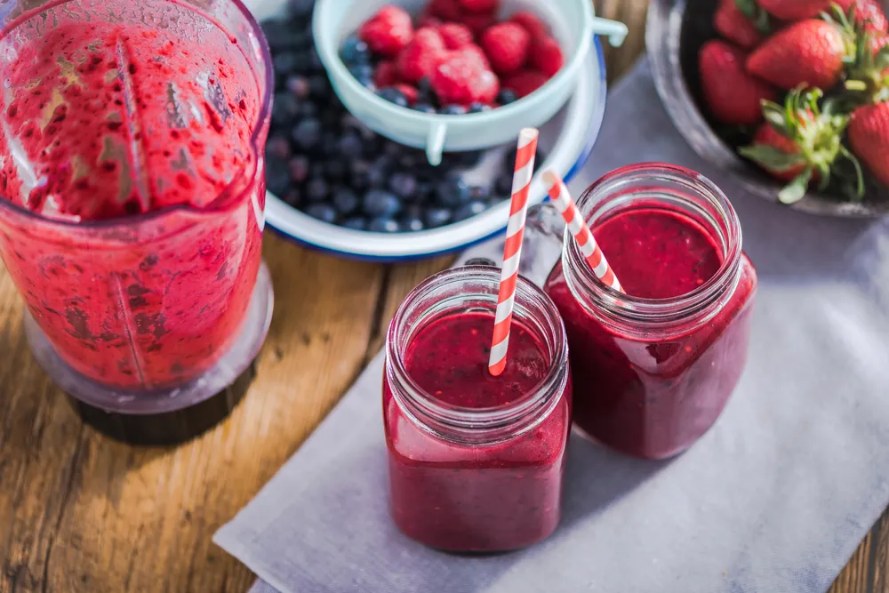

Diabetes-Friendly Smoothies

While diabetes is a manageable condition, but it does create a little more complexity when it comes to diet choices . People with diabetes need to be careful about what they eat, when, and how much — which is a lot to worry about! When it comes to breakfast (or even a mid-morning snack) smoothies are a great option. They provide a fun way to pack a healthful punch full of amazing superfoods.
However, if not done correctly, they can contain a lot of fat and sugar. This is why we’ve created a list of the most diabetic-friendly smoothies to try (along with their recipes)…
Low-Carb Green Smoothie
We’re going to start this list off with a super healthy low-carb green smoothie. While the color might turn some people away (we get it, healthy greens aren’t our favorite foods either), this smoothie is packed with flavor and deliciousness. You’ll need a total of 7 ingredients for this recipe: almond butter, spinach, almond milk, stevia sweetener, protein powder, vanilla extract, avocado, and a cup of ice cubes.
To start, throw all the ingredients into the blender except the ice cubes. Get the right consistency, then add the ice cubes and blend until smooth. If you’re not a huge fan of almond butter it can be swapped for another nut butter. The same goes for the almond milk. Any milk of preference will work! The most important part of this smoothie are those leafy greens which in this recipe we use spinach, but that could also be swapped for either kale, Swiss chard, or even beet greens.
PHOTOS AND RECIPE HERE: DIABETIC FOODIE
Very Berry Smoothie
The list of ingredients in a snack is the best indicator to how healthy it is. In this case, this smoothie contains only four ingredients which not only makes it super easy and quick to whip together on a busy morning, but also nice and healthy. You can use either fresh or frozen berries for this recipe which means it can be enjoyed all year round. (If using fresh fruit, add a couple ice cubes to make this smoothie nice and thick).
In addition to the cup of mixed berries, this recipe calls for a cup of plain (Greek or Icelandic) yogurt, 1-tablespoon of sweetener, and 2-tablespoons of nonfat milk. All of this blended together makes one serving that totals only 205-calories and takes about 5-minutes to throw together!
PHOTOS AND RECIPE HERE: NUTRITION SOLUTIONS
Chocolate Avocado Smoothie
You’ve probably never thought to mix chocolate with avocado, but we’re here to tell you this is the pairing your taste buds have been waiting for! This smoothie is so rich and creamy, it’s practically a dessert. But don’t write it off yet! It’s low carb, vegan, gluten-free and packed full of healthy ingredients. All you need is 1/2 a ripe avocado, 3-tablespoons of cocoa powder, 1-cup of full-fat coconut milk, 1/2-cup of water, 1-teaspoon of lime juice, a pinch of salt and 6 to 7 drops of liquid Stevia.
While it sounds decadent, this chocolate avocado smoothie recipe has less than 80-calories (per serving). Remember, avocado is a healthy fat so even though it has 31-grams of fat, it also has 12-grams of carbs and 2-grams of protein.
PHOTOS AND RECIPE HERE: DIABETES STRONG
Oatmeal Breakfast Smoothie
This oatmeal breakfast smoothie is super filling which can help prevent any unnecessary snacking throughout the day. Plus, it’s packed full of healthy ingredients! What makes it so great for people with diabetes is that the oats help stabilize blood sugar levels making them easier to control and maintain throughout the day. Oats are also high in fiber (along with the flaxseed), vitamins, and minerals.
In order to take the oats and make them drinkable, ground them up in a spice or coffee grinder or food processor. You’ll also need 2 frozen bananas, 3-cups of skim milk, 2-tablespoons of ground flax, and 2-teaspoons of instant coffee.
PHOTOS AND RECIPE HERE: KITCHEN NOSTALGIA
Cucumber Watermelon Smoothie
Even just the name of this smoothie sounds refreshing! It’s definitely one that people will enjoy during those hot summer months or as a way to cool down after a workout. Because the ingredients of this smoothie are so dense with water, it might turn out looking more like a slushie than a smoothie, but that’s just part of the fun! What makes it so great for people with diabetes is that there is no added sugar, it’s just 63-calories per serving, provides an excellent source of vitamin C, and is super hydrating!
The only ingredients needed for this recipe are 1-cup of frozen watermelon, 1/2-cup of cucumber, 1/2 a lime juiced, and 3/4 of a cup of water. Easy peasy!
PHOTOS AND RECIPE HERE: SNACKING IN SNEAKERS
Low-Carb Smoothie Bowl with Berries
No doubt one of the biggest draws to this recipe is that it’s low carb which is key for people with diabetes. Plus, it’s a great option for people who aren’t necessarily interested in drinking their recipe and would prefer to have something they can sit down and eat.
As we all know, strawberries are a great way to kick start the day. They’re light, full of sweet flavor, and they are totally safe for diabetes to eat. This breakfast can be whipped together in under 5-minutes and totals 166-calories with only 4-grams of carbs, a whopping 18-grams of protein, and 9-grams of fat.
PHOTOS AND RECIPE HERE: DIABETES STRONG
Strawberry-Pineapple Smoothie
The combination of strawberry and pineapple in a smoothie is one of my all time favorites! Pineapple tends to make the texture in any smoothie a little more rough, so to make it nice and creamy, this recipe calls for almond milk and almond butter. Throw all four ingredients into a blender and mix it up until you have your desired consistency. If you want to make this smoothie refreshingly cold, try freezing the almond mild to create an icy-texture!
This recipe makes a serving of about 2-cups which comes to 255-calories, 5.6-grams of protein, 39-grams of carbs, and 11-grams of fat.
PHOTOS AND RECIPE HERE: EATING WELL
Turmeric Mango Carrot Smoothie
The bright and exotic colors of this smoothie are enough to entice anyone, but the fact that it’s vegan, gluten-free, and an antioxidant powerhouse make it a great choice for people with diabetes. It’s also packed with healthy fats, protein, fiber, vitamins, and minerals. All of this goodness comes from only five ingredients!
You’ll need a turmeric root to make this smoothie, but to simplify, it can be substituted with just a teaspoon of ground or dried turmeric. You’ll also need 1 small mango (or 1 and 1/2-cups of frozen mango), 2 small carrots, 1/4-cup of cashews, 5 ice cubes, and 1-cup of plain unsweetened plant-based milk. Toss it all in a blender to make two deliciously healthy diabetes-friendly smoothies!
PHOTOS AND RECIPE HERE: SHARON PALMER
Peanut Butter and Banana Smoothie Bowl
We decided to throw another smoothie bowl recipe in here to mix things up, plus this one just sounds like a dessert! While it looks and sounds like a decadent dessert, it’s got an impressive 10-grams of protein and 7-grams of fiber. Plus it contains nutritious ingredients like bananas, chia seeds, and peanut butter. However, what’s so great about smoothie bowls is that they are super versatile. Feel free to toss in any extra ingredients such as nuts, fruits, seeds, or even some shredded coconut.
This particular recipe calls for 1-cup of plain or vanilla soymilk, two frozen bananas, 3-tablespoons of peanut butter, 2-tablespoons of cocoa powder, 1-tablespoon of chia seeds, 1/4-teaspoon of vanilla extract, and then any additional toppers! Each bowl contains 15-percent of the recommended daily intake (RDI) for calcium and vitamin C.
PHOTOS AND RECIPE HERE: LIZ’S HEALTHY TABLE
Strawberry Basil Smoothie
Basil has a strong flavor on its own, but when it’s blended together with a heap of ripe and juicy strawberries they compliment each other oh-so-well! The strawberries work to sweeten this recipe making it a perfect breakfast meal or a light mid-day snack. Another plus? The fruit in this recipe adds enough flavor that there’s no sugar or added sweetener — it’s completely natural! It’s also dairy free.
Each blended smoothie adds up to only 159-calories with 10-grams of carbs, 8-grams of protein, and 10-grams of fat.
PHOTOS AND RECIPE HERE: KETO DIET APP
Source: https://activebeat.com/diet-nutrition/diabetic-friendly-smoothies/